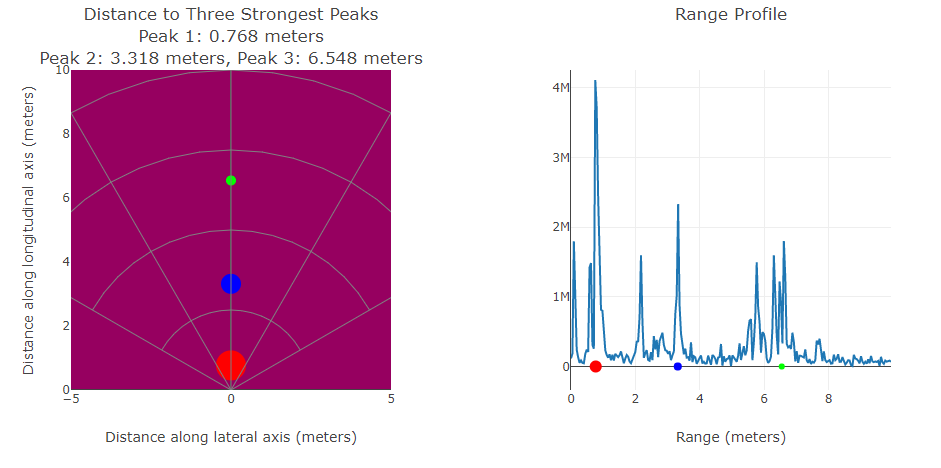
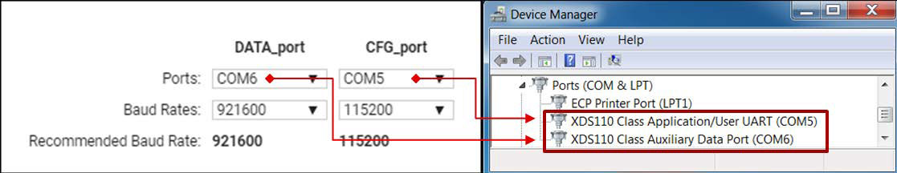

High Accuracy Range Measurement Lab
===========
This lab demonstrates the use of TI mmWave sensors for an application requiring a high degree of range accuracy. The **Zoom-FFT** technique is implemented to detect an object with range accuracy on the level of millimeters. A key application for this lab is fluid level sensing, although it may be useful in a variety of other applications including robotics, machinery, automotive, and even medical.
[[b! 68xx Note
The 68xx version of this lab now includes a multipeak selection feature which returns three range measurements with high accuracy. This feature is not included on the 14xx, 16xx, or 64xx versions of the demo at this time.
]]

-----------
#Theory
This lab is configured for one Tx antenna and one Rx antenna and utilizes the **Zoom FFT** technique which entails two steps. The first step involves taking a 1D *coarse* FFT in order to search for a peak. The second step involves a second **zoom-in** fft which analyzes the a portion of the peak spectrum at much higher resolution.
## Comparison between 64xx/14xx version and 16xx/68xx version
Since the 16xx/68xx devices include on-chip DSP, while the 14xx device does not, there are a few differences to note. The max FFT size on 64xx/14xx version is 16K due to hardware limitations of the on-chip FFT accelerator. Consequently the 64xx/14xx version will have much lower processing latency as well as lower power consumption. The 16xx/68xx version utilizes the on-chip DSP so resolution is much higher as well as a much larger FFT Size.
# Requirements
### Prerequisite
[[y! Run Out of Box Demo
Before continuing with this lab, users should first run the out of box demo for your EVM.
This will enable users to gain familiarity with the sensor's capabilities as well as the various tools used across all labs in the mmWave Industrial Toolbox. ]]
### Required and Supported mmWave Evaluation Modules (EVM)
One of the following EVM options below is required.
OPTION | Item
------------------|-----------------
A | [IWR1443BOOST EVM](http://www.ti.com/tool/IWR1443BOOST)
B | [IWR1642BOOST EVM](http://www.ti.com/tool/IWR1642BOOST)
C | [IWR6843AOP EVM](http://www.ti.com/tool/IWR6843AOPEVM)
D | [IWR6843ISK ES2.0 EVM](http://www.ti.com/tool/IWR6843ISK)
E | [IWR6843ODS ES2.0 EVM](http://www.ti.com/tool/IWR6843ISK-ODS)
Optional | [MMWAVEICBOOST Carrier Board](http://www.ti.com/tool/MMWAVEICBOOST) for use with C,D,or E in CCS based debug.
[[b! 6843 ISK/ODS EVMs
Please note that the AoP, ISK, and ODS EVMs (Options C, D, and E) are compatible with both the 68xx and 64xx version of this lab.
]]
[[r! IWR6843 ES2.0 Only
The IWR6843 ISK and ODS versions of this lab are only compatible with ES2.0 silicon. Check the device version on your IWR6843 using the on-chip device markings as shown below>
1. If line 4 reads `678A`, you have an ES2 device. In this case, this lab is compatible with your EVM.
2. If line 4 reads `60 GHZi`, you have an older ES1 device. In this case, the lab is NOT compatible with your EVM. ES2 IWR6843 boards are orderable from the EVM link above.
<img src="images/iwr6843_silicon_revision.png" width="500"/>
]]
[[r! AoP ES2.0 EVM only
The IWR6843 AoP version of this lab is only compatible with ES2.0 silicon and the corresponding EVM. Please ensure your EVM is the same as in the below image.
<img src="images/iwr6843aopevm1.png" width="300"/>
]]
### Additional Hardware Requirements
Quantity | Item | Details
---------|--------------------------|-----------------
1 | Computer | Windows 7 or 10 PC
1 | Micro USB Cable | Provided with the EVM kit
1 | Power Supply | 5V, 3A with 2.1-mm barrel jack (center positive). The power supply can be wall adapter style or a battery pack with a USB to barrel jack cable.
### Software
Tool | Version | Download Link
----------------------------|---------------------------|--------
TI mmWave SDK | 3.5.x.x or 2.1.x.x | Download and install [mmWave SDK 3.5.x.x](http://software-dl.ti.com/ra-processors/esd/MMWAVE-SDK/latest/index_FDS.html) for IWR6843 ISK, ODS, or AoP. Download and install [mmWave SDK 2.1](http://software-dl.ti.com/ra-processors/esd/MMWAVE-SDK/lts-latest/index_FDS.html) for IWR1443/IWR1642 devices.
mmWave Industrial Toolbox | Latest | Download and install the toolbox. Go to [Using TI Resource Explorer & the mmWave Industrial Toolbox](../../../../docs/readme.html) for instructions.
Uniflash | Latest | Uniflash tool is used for flashing TI mmWave Radar devices. [Download offline tool](http://www.ti.com/tool/UNIFLASH) or use the [Cloud version](https://dev.ti.com/uniflash/#!/)
-----------
Quickstart
===========
The quickstart guide will cover setting up the EVM, flashing firmware, and running the demo.
## 1. Setup the EVM for Flashing Mode
* If using MMWAVEICBOOST + Antenna Module setup follow the instructions for [Hardware Setup for Flashing in MMWAVEICBOOST Mode](../../../common/docs/hardware_setup/hw_setup_mmwaveicboost_mode_flashing.html)
* If using IWR6843 ISK or ODS in Standalone/Modular Mode follow the instructions for [Hardware Setup of IWR6843ISK/ODS for Flashing Mode](../../../common/docs/hardware_setup/hw_setup_isk_ods_modular_mode_flashing.html)
* If using the IWR6843AoP follow the instructions to set the [on-board switches for Standalone Flashing Mode.](../../../common/docs/hardware_setup/hw_setup_aop_modular_mode_for_flashing.html)
* If using either the IWR1642BOOST or IWR1443BOOST follow the instructions for [Hardware Setup of IWRXXXXBOOST for Flashing Mode](../../../common/docs/hardware_setup/hw_setup_boost_evm_for_flashing.html)
## 2. Flash the EVM using Uniflash
A prebuilt binary has been included with the lab. First, navigate to the appropriate lab folder for your device:
`<INDUSTRIAL_TOOLBOX_INSTALL_DIR>\mmwave_industrial_toolbox_<VER>\labs\level_sensing\<14/16/68>xx_high_accuracy\prebuilt_binaries`
Flash the binary for your device as listed below using UniFlash. Follow the instructions for [using UniFlash](../../../common/docs/software_setup/using_uniflash_with_mmwave.html)
Device | Binary Name
--------------------------|------------
IWR1443 | `xwr14xx_high_accuracy_mss.bin`
IWR1642 | `xwr16xx_high_accuracy_lab.bin`
IWR6843 | `high_accuracy_68xx_demo.bin`
IWR6843 (HWA Only Version) | `high_accuracy_64xx_demo.bin`
IWR6843AoP | `high_accuracy_68xx_demo.bin`
## 3. Setup the EVM for Functional Mode
* If using MMWAVEICBOOST + Antenna Module setup follow the instructions for [Hardware Setup of MMWAVEICBOOST + Antenna Module for Functional Mode](../../../common/docs/hardware_setup/hw_setup_mmwaveicboost_mode_functional.html)
* If using IWR6843 ISK or ODS follow the instructions for [Hardware Setup of MMWAVEICBOOST + Antenna Module for Functional Mode](../../../common/docs/hardware_setup/hw_setup_mmwaveicboost_mode_functional.html)
* If using the IWR6843AoP follow the instructions to set the [on-board switches for Functional Mode.](../../../common/docs/hardware_setup/hw_setup_aop_modular_mode_for_functional.html)
* If using either the IWR1642BOOST or IWR1443BOOST follow the instructions for [Hardware Setup of IWRXXXXBOOST for Functional Mode](../../../common/docs/hardware_setup/hw_setup_boost_evm_for_functional.html)
At this point, the EVM should be powered, connected to the PC, flashed with the demo, and put in functional mode. The hardware setup is now complete.
## 4. Run the Lab
### 1. Running the Lab GUI
[[b! Visualizer Note
The High Accuracy Visualizer has been updated as of Industrial Toolbox 4.7.0. Please use the latest visualizer as linked below.
]]
* Using Google Chrome connect to the [High Accuracy Visualizer.](https://dev.ti.com/gallery/view/4768107/High_Accuracy_Visualizer/ver/2.0.0/)
* ***If using the 64xx version of the lab then use the alternate [64xx High Accuracy Visualizer.](https://dev.ti.com/gallery/view/4768107/High_Accuracy_Visualizer_20200128013920/ver/1.0.0/)***
* If prompted, follow the on-screen instructions for installing [TI Cloud Agent](https://chrome.google.com/webstore/detail/ticloudagent-bridge/pfillhniocmjcapelhjcianojmoidjdk)
* Once the demo is loaded, go to **Options** → **Serial Port**
<img src="images/serialPort.png" width="400" />
* In the serial port window, enter the appropriate port in each of the drop down menus and click **Configure.**

* If using the IWR6843 AoP EVM, the ports are named differently. Select the correct port names as shown below.
<img src="images/mmwave_demo_visualizer_ports_aop.png" width="500" />
* Press **Load Config From PC and Send** and select the `high_accuracy_demo_<14/16/64/68>xx.cfg` from the `chirp_configs` folder.
* **Tip:** You may need to click the **Autoscale** button to frame the **Range Profile** correctly.
<img src="images/autoscale.png" width="500" />
### 2. Understanding the Output
The **Range Profile** shows the peaks of corresponding objects within the scene. The **X-Y Scatter Plot** illustrates the distance of the strongest detected object (or objects) on the y-axis and displays the range with millimeter precision. Appropriate mechanical mounting and/or optical lensing may be required in order to achieve millimeter level accuracy.
<img src="images/levelpic2.png" width="600" />
The **68xx version** of the lab includes a **multi-peak detection** feature where the Zoom-FFT measurement is performed on three distinct objects in the scene. The measurement is performed on each of the three *strongest* (or largest) peaks seen in the Range Profile. The colors red, blue, and green are used to distinguish the first, second, and third strongest peaks respectively. The colors are shown each on the middle y-axis in the left side plot and on the bottom x-axis in the right side plot.
**NOTE:** The Multi-Peak feature is only avaiable on the 68xx version of the **High Accuracy Lab.**
#### Limiting Range
The user can use the **RangeLimitCfg** command in the `high_accuracy_demo_<14/16/64/68>xx.cfg` file to limit the range for their particular application.
The command **RangeLimitCfg** uses the following parameter structure `<numRangeBinZoomIn> <dis/enable> <min range limited> <max range limited>`, where:
* `<numRangeBinZoomIn > `(16xx/68xx only) : is the number of bins zoomed in on each side of coarse peak. *Note:* this is an optimized value and alteration is not recommended.
* `<dis/enable>` : 0 for disabled, 1 for enabled
* `<min range limited>` : in unit of meters
* `<max range limited>` : in unit of meters
<img src="images/rangelimit.png" width="200" />
***Example:*** In the above configuration, range limitation is enabled, the min range is 1.0m, and the max range is 3.0m.
-----------
Developer's Guide
===========
* [Build the firmware from source code](#build-the-firmware-from-source-code)
* [Work with GUI source code](#work-with-gui-source-code)
Build the Firmware from Source Code
-----------
### 1. Software Requirements
Tool | Version | Download Link
----------------------------|---------------------------|--------------
TI mmWave SDK | 3.5.x.x or 2.1.x.x | Download and install [mmWave SDK 3.5](http://software-dl.ti.com/ra-processors/esd/MMWAVE-SDK/latest/index_FDS.html) for IWR6843 devices. Download and install [mmWave SDK 2.1](http://software-dl.ti.com/ra-processors/esd/MMWAVE-SDK/lts-latest/index_FDS.html) for IWR1443/IWR1642 devices.
Code Composer Studio | 8.3.1 | [Code Composer Studio v8.3.1](http://processors.wiki.ti.com/index.php/Download_CCS#Code_Composer_Studio_Version_8_Downloads)
mmWave Industrial Toolbox | 4.x.x | Download and install the toolbox. Go to [Using TI Resource Explorer & the mmWave Industrial Toolbox](../../../../docs/readme.html) for instructions.
### 2. Import Lab Project
To import the source code into your CCS workspace, CCS projects are provided for the High Accuracy Lab in the mmWave Industrial Toolbox.
[[b! Project Workspace
When importing projects to a workspace, the files are COPIED into the workspace. All modifications will only be implemented for the workspace copy. The original project downloaded in mmWave Industrial Toolbox is not touched.
]]
- Start CCS and setup workspace as desired.
- Import the project(s) specified below for the EVM platform to CCS. See instructions for importing [here](../../../../docs/readme.html#import-ccs-projects-from-the-mmwave-industrial-toolbox-into-code-composer-studio)
Platform | Project Names | Location in Industrial Toolbox
----------|-------------------------|-----------------------------
14xx |high_accuracy_14xx_mss | `<INDUSTRIAL_TOOLBOX_INSTALL_DIR>\mmwave_industrial_toolbox_<VER>\labs\level_sensing\14xx_high_accuracy\pjt`
16xx |high_accuracy_16xx_dss & high_accuracy_16xx_mss | `<INDUSTRIAL_TOOLBOX_INSTALL_DIR>\mmwave_industrial_toolbox_<VER>\labs\level_sensing\16xx_high_accuracy\pjt`
64xx |high_accuracy_64xx_mss |`<INDUSTRIAL_TOOLBOX_INSTALL_DIR>\mmwave_industrial_toolbox_<VER>\labs\level_sensing\64xx_high_accuracy\src`
68xx |high_accuracy_68xx_dss & high_accuracy_68xx_mss |`<INDUSTRIAL_TOOLBOX_INSTALL_DIR>\mmwave_industrial_toolbox_<VER>\labs\level_sensing\68xx_high_accuracy\src`
68xxAoP |high_accuracy_68xx_dss & high_accuracy_68xx_mss |`<INDUSTRIAL_TOOLBOX_INSTALL_DIR>\mmwave_industrial_toolbox_<VER>\labs\level_sensing\68xx_high_accuracy\src`
- Verify that the import occurred without error: in CCS Project Explorer the correct project name should appear.
[[r! Error during Import to IDE
If an error occurs, check that the software dependencies listed above have been installed. Errors will occur if necessary files are not installed in the correct location for importing.
]]
### 3. Build the Lab
1. (16xx/68xx Version Only) First, select the DSS project `High_Accuracy_<device type>__dss` so it is highlighted. Right click on the project and select **Rebuild Project**.
2. After the DSS project has succesfully built, select the MSS project `High_Accuracy_<device type>__mss` so it is highlighted. Right click on the project and select **Rebuild Project**.
3. On successful build, the following should appear:
* In `High_Accuracy_<device type>__dss/debug`, **`High_Accuracy_<device type>_dss.xe674`** (this is the C67x binary used for CCS debug mode)
* In `High_Accuracy_<device type>__mss/debug`, **`High_Accuracy_<device type>_mss.xer4f`** (this is the Cortex R4F binary used for CCS debug mode) and **`High_Accuracy_<device type>_lab.bin`** (this is the flashable binary used for deployment mode)
{{y Selecting Rebuild instead of Build ensures that the project is always re-compiled. This is especially important in case the previous build failed with errors.}}
[[r! Build Fails with Errors
If the build fails with errors, please ensure that all the software requirements are installed as listed above and in the mmWave SDK release notes.
]]
[[b! Note
As mentioned in the [Quickstart](#quickstart) section, pre-built binary files, both debug and deployment binaries are provided in the pre-compiled directory of the lab.
]]
### 4. Execute the Compiled Lab
There are two ways to execute the compiled code on the EVM:
* **Deployment mode**: In this mode, the EVM boots autonomously from flash and starts running the bin image
* Use the **`High_Accuracy_<device type>_lab.bin`** found at `<CCS_PROJECT_WORKSPACE_DIR>\High_Accuracy_<device type>_mss\Debug\` and follow the same process in the [Quickstart](#quickstart) section except flash this binary instead.
* **Debug mode**: This mode is is used for downloading and running the executable from CCS. This mode enables JTAG connection with CCS while the lab is running and is useful during development and debugging.
* Follow the [CCS Debug Mode Guide](../../../common/docs/software_setup/using_ccs_debug.html), using the binaries listed below.
* After CCS Debug mode is setup, launch the visualizer and proceed as described in the [Run the Lab section of the Quickstart](#4-run-the-lab)
Debug binary | Location | Connect and load to
---------------|----------|----------------------
`High_Accuracy_<device type>_mss.xer4f` | `<CCS_PROJECT_WORKSPACE_DIR>\High_Accuracy_<device type>_mss\Debug\` | Cortex_R4_0
`High_Accuracy_<device type>_dss.xe674` | `<CCS_PROJECT_WORKSPACE_DIR>\High_Accuracy_<device type>_dss\Debug\` | C674X_0
-----------
Need More Help?
===========
* Additional resources in the documentation of the mmWave SDK:
* mmWave SDK Module Doc located at `<mmwave_sdk_install_dir>/docs/mmwave_sdk_module_documentation.html`
* mmWave SDK User's Guide located at `<mmwave_sdk_install_dir>/docs/mmwave_sdk_user_guide.pdf`
* Search for your issue or post a new question on the [mmWave Sensors E2E forum](https://e2e.ti.com/support/sensor/mmwave_sensors/f/1023)